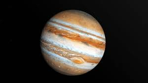

Júpiter

Júpiter es el planeta más grande del sistema solar y el
quinto en orden de lejanía al Sol. Es un gigante gaseoso que
forma parte de los denominados planetas exteriores. Recibe
su nombre del dios romano Júpiter (Zeus en la mitología
griega). Es uno de los objetos naturales más brillantes en
un cielo nocturno despejado, superado solo por la Luna,
Venus y algunas veces Marte.
|
|
Ío
Ío es el satélite galileano más cercano a Júpiter. Es el
tercer satélite por su tamaño, tiene la más alta
densidad entre todos los satélites.
Europa
Europa es el sexto satélite natural de Júpiter en orden
creciente de distancia y el más pequeño de los cuatro
satélites galileanos. Fue descubierto en 1610 por
Galileo
Ganímedes
Ganimedes es el satélite natural más grande de Júpiter y
del sistema solar, además de ser el único que tiene
campo magnético.
Calisto
Calisto es un satélite del planeta
Júpiter descubierto en 1610 por Galileo Galilei. Es el
tercer satélite más grande del sistema solar y el
segundo del sistema joviano, después de Ganimedes.
|
|